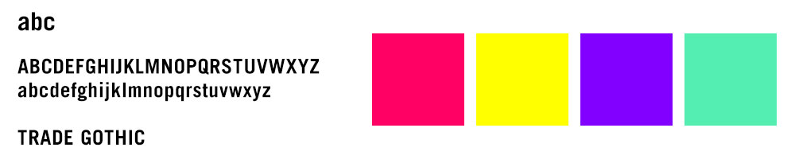
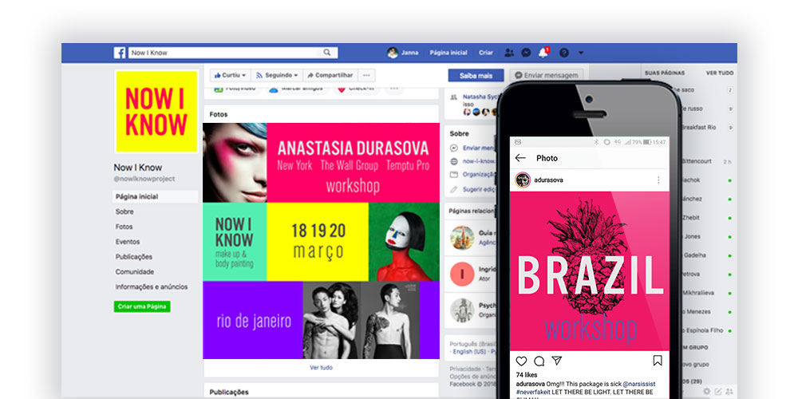

Now I Know
Identidade Visual
Now I Know é um ambicioso projeto de uma série de palestras com artistas internacionais realizadas através de crowdfunding. A primeira palestra seria da make-up artist Anastasia Durasova. O trabalho editorial dela pode ser visto na Vogue, GARAGE, Harper’s Bazaar, L'officielle, Marie Claire, Elle, Glamour, Vanity Fair, entre outros.
A identidade foi criada especialmente para campanha nas redes sociais. Como a identidade predominantemente seria usada no meio digital deu a liberdade para usar cores em fluorescentes. As cores supersaturadas e fonte bold destaca a campanha no meio das disputadas redes sociais.

